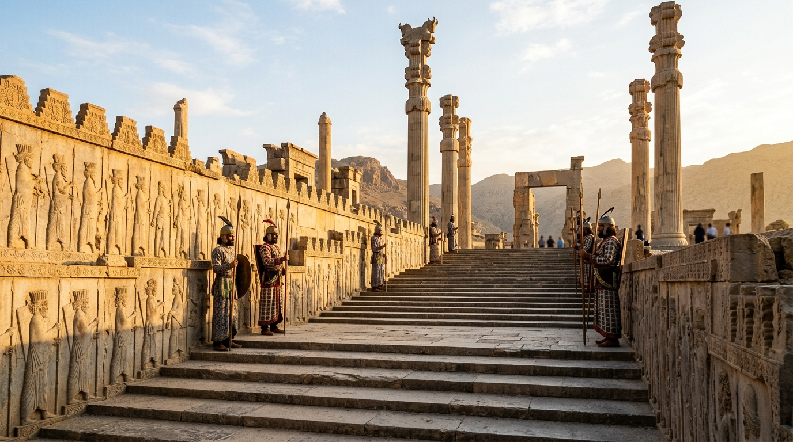

O Libertador Pagão, o Decreto de Ciro e o Renascimento de Jerusalém
A ascensão do Império Medo-Persa representa um dos pontos de virada mais fascinantes e teologicamente ricos de toda a narrativa bíblica. Sob a liderança militar extraordinária e a visão diplomática inovadora de Ciro, o Grande, os persas conquistaram a outrora invencível Babilônia em 539 a.C., quase sem derramamento de sangue. Enquanto impérios anteriores (Assíria e Babilônia) governavam através do terror absoluto, da deportação em massa e da destruição de identidades nacionais, Ciro inaugurou uma política de Estado revolucionária: o imperialismo tolerante.
Ele percebeu que um império vasto seria mais fácil de governar se os povos subjugados tivessem liberdade religiosa e autonomia para viverem em suas terras de origem, desde que pagassem tributos e orassem aos seus deuses pela vida do imperador. Para os judeus que amargavam décadas de cativeiro às margens do rio Eufrates, essa mudança não foi uma mera sorte geopolítica, mas o som das correntes se partindo e o cumprimento exato da promessa de Deus de que o exílio terminaria.
Índice do Estudo:
- 1. Ciro: O Ungido Pessoal de Yahweh
- 2. A Restauração Lenta e Dolorosa: Zorobabel, Esdras e Neemias
- 3. A Rainha Ester e a Providência nos Bastidores do Império
- 4. O Fim da História e o Início da Esperança
- 5. Tabela de Resumo e Aplicação Prática
1. Ciro: O Ungido Pessoal de Yahweh
A relação das Escrituras com o rei Ciro não tem paralelos. Quase cento e cinquenta anos antes deste rei nascer, o profeta Isaías o mencionou pelo nome de forma assombrosa (Isaías 44:28 e 45:1). A Bíblia o chama de "meu pastor" e até mesmo de "ungido" (no hebraico, mashiach ou messias) — um título sagrado geralmente reservado aos reis e sacerdotes de Israel. Deus declarou que tomaria o pagão Ciro "pela mão direita" para subjugar as nações e abrir as portas de bronze da Babilônia.
No seu primeiríssimo ano de domínio sobre a Babilônia, Ciro emitiu um decreto formidável (registrado no livro de Esdras e maravilhosamente corroborado pela arqueologia através do Cilindro de Ciro). No decreto, ele reconhece que "o Senhor, Deus dos céus" lhe dera todos os reinos e o incumbira de edificar um Templo em Jerusalém. Ciro não apenas assinou a carta de alforria de uma nação inteira, mas ordenou que seus vizinhos os financiassem e devolveu os milhares de utensílios sagrados de ouro e prata que Nabucodonosor havia pilhado décadas antes.
2. A Restauração Lenta e Dolorosa: Zorobabel, Esdras e Neemias
A reconstrução de Jerusalém não ocorreu num passe de mágica; foi um processo árduo e intermitente que se estendeu por quase um século, sob a permissão de diferentes monarcas persas. O retorno ocorreu em três grandes levas:
Zorobabel e Josué (A Reconstrução do Templo): A primeira onda, logo após o decreto de Ciro, enfrentou o desânimo interno e a forte oposição política de samaritanos, que paralisaram a obra por anos. Foi necessária a intervenção incisiva dos profetas Ageu e Zacarias para despertar o povo de sua apatia e, com o apoio de um novo decreto do rei Dario I, o modesto Segundo Templo foi finalmente concluído e dedicado.
Esdras (A Reconstrução da Palavra): Cerca de oitenta anos depois, no reinado de Artaxerxes I, o copista e erudito Esdras chegou a Jerusalém. Sua missão não envolvia pedras ou argamassa, mas a alma da nação. Ele encontrou o povo mergulhado no sincretismo religioso e no casamento com povos idólatras. Esdras promoveu um reavivamento profundo baseado no arrependimento e na leitura pública da Torá, consolidando a lei como o centro absoluto da vida judaica.
Neemias (A Reconstrução dos Muros): Pouco tempo depois, também sob o favor de Artaxerxes I, o copeiro real Neemias deixou o luxo do palácio de Susa rumo às ruínas de Jerusalém. Enfrentando zombarias cruéis e constantes ameaças de ataques armados, Neemias liderou o povo numa força-tarefa formidável. Com uma mão trabalhando e a outra segurando a espada, as muralhas defensivas da cidade foram erguidas no tempo recorde de cinquenta e dois dias.
3. A Rainha Ester e a Providência nos Bastidores do Império
Embora Jerusalém estivesse sendo reconstruída, a imensa maioria dos judeus escolheu permanecer nas ricas províncias do império persa, que se estendia da Índia à Etiópia. É neste contexto da "diáspora" (dispersão), durante o reinado do instável rei Xerxes (Assuero), que se desenrola o drama do livro de Ester.
O livro de Ester possui uma peculiaridade única: o nome de Deus não é mencionado nenhuma vez em seus capítulos. No entanto, Suas impressões digitais estão em cada cena. Quando o perverso vizir Hamã arquitetou um decreto legal e irreversível para exterminar todos os judeus do império (um autêntico holocausto antigo), a providência divina já havia manobrado silenciosamente uma jovem órfã judia, Hadassa (Ester), para o trono de rainha. Arriscando a própria vida ao entrar na sala do trono sem ser convocada — o que era crime capital na Pérsia —, Ester desmascarou Hamã, salvando seu povo e dando origem à vibrante e alegre festa de Purim, provando que Deus protege os Seus onde quer que estejam.
4. O Fim da História e o Início da Esperança
O Período Persa marca cronologicamente o encerramento do Antigo Testamento. As últimas páginas da história sagrada (os livros de Esdras, Neemias e o profeta Malaquias) terminam com o povo judeu firmemente enraizado em sua terra, com a lei em suas mãos, sem reis de sua própria linhagem sentados no trono, e sob o manto protetor de um império gentio. A dolorosa lição do exílio havia sido aprendida: a idolatria estava morta. Agora, Israel entrava num silêncio profético de quatrocentos anos, esperando e aguardando o momento exato em que a verdadeira glória retornaria ao Templo, na pessoa do Messias.
5. Tabela de Resumo e Aplicação Prática
| Elemento no Exílio | Significado Teológico | Sombra do Redentor (Cristo) |
|---|---|---|
| Decreto de Ciro | O fim do cativeiro e o retorno à terra prometida. | Cristo, o verdadeiro Libertador do cativeiro do pecado. |
| Muros de Neemias | A proteção e o estabelecimento do povo de Deus. | O muro de salvação que Cristo edifica para a Sua Igreja. |
| Ester | A intercessão corajosa que salvou o povo da morte. | Cristo, nosso Sumo Sacerdote que intercede por nós. |
💡 Aplicação Prática: O que aprendemos hoje?
O período persa nos ensina que Deus é soberano mesmo quando parece que o mundo está nas mãos de governantes pagãos. Ciro não era um fiel, mas foi usado por Deus como um instrumento de restauração. Isso nos traz um alento imenso hoje: Deus não precisa de um mundo "cristão" para realizar o Seu plano; Ele usa todas as nações e circunstâncias para abrir caminho para o Seu povo.
A lição prática para nós é a perseverança na reconstrução. Neemias reconstruiu os muros sob zombaria e ameaça, sem nunca abandonar o trabalho. Muitas vezes, Deus nos dá a visão de restaurar algo — nossa família, nosso caráter, nosso ministério — mas a oposição logo se levanta. O período persa nos ensina que a reconstrução exige trabalho constante com as duas mãos: uma trabalhando e a outra vigilante na oração. No final, como Ester, descobriremos que Deus nos posicionou "para um tempo como este", e que Sua providência invisível está cuidando de cada detalhe.
Continue sua jornada:
- Voltar ⬅️ Ver todos os impérios
- Temas 📚 Ver todos os estudos
Apoie este projeto 🌱
Se este estudo foi útil, considere apoiar a manutenção do site.
Chave PIX (Celular):
marcosmontanaria@gmail.com